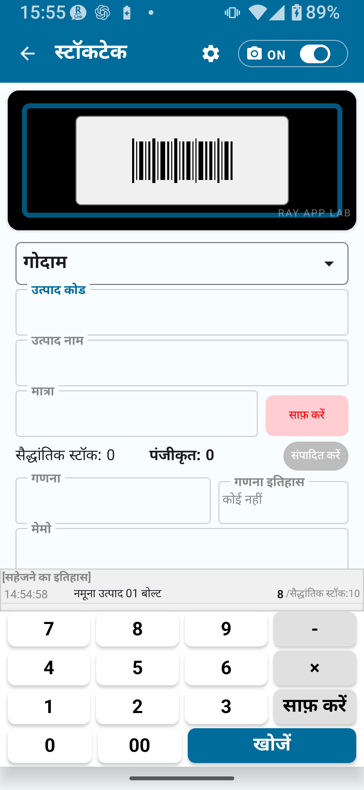

क्या कर सकते हैं, सीमाएँ, चरण-दर-चरण निर्देश और अनुशंसित कार्यप्रवाह
इस पृष्ठ में शामिल विषय:
निःशुल्क संस्करण स्टॉकटेक क्या कर सकता है / निःशुल्क संस्करण की सीमाएँ / चरण-दर-चरण स्टॉकटेक कार्यप्रवाह / बारकोड, उत्पाद नाम और मात्रा प्रविष्टि / स्थान का उपयोग / इतिहास समीक्षा / CSV निर्यात सीमाएँ / निःशुल्क संस्करण में उपलब्ध नहीं सुविधाएँ / अनुशंसित कार्यप्रवाह
अध्याय 1
निःशुल्क संस्करण में स्टॉकटेक का अवलोकन
स्टॉकटेक माल को शारीरिक रूप से गिनने और मात्राएँ दर्ज करने की प्रक्रिया है। निःशुल्क संस्करण आपको बुनियादी स्टॉकटेक कार्यप्रवाह आज़माने देता है।
स्टॉकटेक प्रवाह है: उत्पाद स्कैन करें → मात्रा दर्ज करें → सहेजें → इतिहास देखें।
💡 स्टॉकटेक क्या है?
स्टॉकटेक वह मात्रा दर्ज करता है जो आपने व्यक्तिगत रूप से गिनी (वास्तविक गणना)। यह इन्वेंटरी प्रबंधन की प्राप्ति, माल भेजने और स्थानांतरण सुविधाओं से अलग ऑपरेशन है — इन्हें भ्रमित न करें।
निःशुल्क संस्करण में उपलब्ध स्टॉकटेक सुविधाएँ
उत्पाद कोड / बारकोड दर्ज करें या स्कैन करें
उत्पाद नाम दर्ज करें
वास्तविक गणना मात्रा दर्ज करें
मेमो / नोट्स दर्ज करें
स्टॉकटेक इतिहास देखें
निःशुल्क संस्करण सीमा के भीतर सहेजें और निर्यात करें

चित्र 1-1 स्टॉकटेक मुख्य स्क्रीन (निःशुल्क संस्करण)
अध्याय 2
निःशुल्क संस्करण की सीमाएँ
निःशुल्क संस्करण पर निम्नलिखित प्रतिबंध लागू होते हैं।
विषय
निःशुल्क संस्करण सीमा
सीमा हटाने का तरीका
मास्टर डेटा रिकॉर्ड
30 तक
बेसिक या फुल संस्करण
स्टॉकटेक इतिहास रिकॉर्ड
30 तक
बेसिक या फुल संस्करण
निर्यात किए जाने वाले रिकॉर्ड
30 तक
बेसिक या फुल संस्करण
स्क्रीन रोटेशन लॉक
उपलब्ध नहीं
बेसिक अनलॉक या उससे ऊपर
विस्तृत कोड नियम
उपलब्ध नहीं
फुल अनलॉक
विस्तृत स्थान नियम
उपलब्ध नहीं
फुल अनलॉक
विस्तृत कैमरा सेटिंग्स
उपलब्ध नहीं
फुल अनलॉक
विस्तृत CSV निर्यात
उपलब्ध नहीं
फुल अनलॉक
⚠ नोट
30 रिकॉर्ड की सीमा तक पहुँचने पर सहेजना या निर्यात करना उपलब्ध नहीं हो सकता। सीमा आने से पहले बेसिक या फुल संस्करण में अपग्रेड करने की योजना बनाएँ।
🔍 कीमत और खरीद शर्तें
वर्तमान मूल्य और खरीद की शर्तों के लिए Google Play देखें। यह मैनुअल निश्चित मूल्य नहीं बताता।
अध्याय 3
चरण-दर-चरण स्टॉकटेक निर्देश
बुनियादी स्टॉकटेक कार्यप्रवाह
मुख्य स्क्रीन पर स्टॉकटेक टैप करें।
बारकोड स्कैन करें, या उत्पाद कोड मैन्युअल रूप से दर्ज करें।
उत्पाद नाम दिखाई देता है। यदि कोड दर्ज नहीं है, तो नाम मैन्युअल रूप से दर्ज करें।
स्थान (गोदाम, दुकान आदि) पुष्टि करें या चुनें।
शारीरिक रूप से गिनी मात्रा दर्ज करें।
आवश्यकतानुसार मेमो दर्ज करें।
सहेजें टैप करके प्रविष्टि स्टॉकटेक इतिहास में दर्ज करें।
स्टॉकटेक इतिहास में सहेजी गई प्रविष्टि की जाँच करें।
🚨 महत्वपूर्ण
सहेजने से पहले हमेशा मात्रा की जाँच करें। गलत मात्रा दर्ज करने से इन्वेंटरी के आँकड़ों में अंतर आ सकता है। यदि बाद में संशोधन की आवश्यकता हो, तो ऐप की स्क्रीन पर दिखाए गए विकल्पों और निर्देशों के अनुसार आगे बढ़ें।
क्रमिक रूप से कई उत्पाद गिनना
पहला आइटम सहेजने के बाद, अगले उत्पाद का बारकोड स्कैन करें (या कोड दर्ज करें)।
चरण 2–7 दोहराएँ।
सभी उत्पाद दर्ज होने के बाद, पूरा स्टॉकटेक इतिहास देखें।
💡 सुझाव
स्टॉकटेक एक ही सत्र में पूरा करना ज़रूरी नहीं। ऐप बंद कर दें और सारा सहेजा इतिहास बना रहेगा।
चित्र 3-1 स्टॉकटेक इतिहास स्क्रीन
अध्याय 4
बारकोड, उत्पाद नाम और मात्रा प्रविष्टि
बारकोड स्कैनिंग
कैमरा लॉन्च करें और बारकोड पर रखें — स्वचालित स्कैन होगा। स्कैन विफल होने पर अच्छी रोशनी वाली जगह जाएँ या मैन्युअल प्रविष्टि पर स्विच करें।
मैन्युअल उत्पाद कोड प्रविष्टि
बारकोड उपलब्ध न होने पर, कोड फ़ील्ड में सीधे उत्पाद कोड टाइप करें। दर्ज कोड के लिए उत्पाद नाम स्वचालित रूप से भर जाता है।
उत्पाद नाम प्रविष्टि
दर्ज नहीं किए गए कोड के लिए उत्पाद नाम मैन्युअल रूप से दर्ज करें। दर्ज किया गया नाम स्टॉकटेक इतिहास में सहेजा जाता है। मास्टर डेटा में पहले से दर्ज किए बिना काम करते समय रिकॉर्ड सीमा का ध्यान रखें।
वास्तविक गणना मात्रा प्रविष्टि
शारीरिक रूप से गिनी गई मात्रा को संख्यात्मक मान के रूप में दर्ज करें। सहेजने से पहले दर्ज की गई संख्या की जाँच करें।
⚠ नोट
वह सटीक मात्रा दर्ज करें जो आपने गिनी। गलत प्रविष्टि से इन्वेंटरी में अंतर पैदा हो सकता है। सहेजने से पहले हमेशा संख्या की जाँच करें।
मेमो / नोट्स दर्ज करना
कार्य नोट या टिप्पणियाँ स्वतंत्र रूप से दर्ज कर सकते हैं। वे स्टॉकटेक इतिहास प्रविष्टि के साथ दर्ज होती हैं।
फ़ील्ड
विवरण
अनिवार्य / वैकल्पिक
बारकोड / उत्पाद कोड
उत्पाद पहचानने के लिए उपयोग किया कोड
अनिवार्य
उत्पाद नाम
कोड दर्ज नहीं होने पर दर्ज किया जाता है
सशर्त अनिवार्य
स्थान
जहाँ स्टॉकटेक किया जा रहा है
सेटिंग्स पर निर्भर
वास्तविक गणना मात्रा
वास्तव में गिनी गई मात्रा
अनिवार्य
मेमो
नोट या टिप्पणियाँ
वैकल्पिक
अध्याय 5
स्थान का उपयोग
निःशुल्क संस्करण सरलीकृत स्थान सेटअप उपयोग करता है। डिफ़ॉल्ट स्थान "गोदाम" और "दुकान" हैं।
सरल मोड के अनुसार स्थान
स्टॉकटेक मोड
उपलब्ध स्थान
उदाहरण उपयोग
सरल A
केवल गोदाम
एक गोदाम प्रबंधित करना
सरल B
गोदाम + दुकान
गोदाम और दुकान दोनों का स्टॉकटेक
सरल C
केवल दुकान
एक दुकान प्रबंधित करना
सेटिंग्स → स्टॉकटेक सेटिंग्स के अंतर्गत मोड चुनें। शुरुआत से पहले सही मोड चुनने से स्टॉकटेक कार्यप्रवाह सुचारू होता है।
💡 सुझाव
विस्तृत स्थान का उपयोग (जैसे शेल्फ नंबर) फुल अनलॉक सुविधा है। इसे सेटिंग्स में विस्तृत मोड पर स्विच करके सक्षम करें।
⚠ नोट
विस्तृत स्थान दर्ज होने पर भी, मोड अभी भी सरल A/B/C होने पर वे दिखाई नहीं देंगे। विस्तृत मोड पर स्विच करना आवश्यक है।
अध्याय 6
स्टॉकटेक इतिहास देखना
सभी सहेजी स्टॉकटेक प्रविष्टियाँ स्टॉकटेक इतिहास में देखी जा सकती हैं।
इतिहास में क्या देख सकते हैं
सहेजने की तारीख और समय
उत्पाद कोड और नाम
दर्ज वास्तविक गणना मात्रा
स्थान
मेमो
निःशुल्क संस्करण इतिहास सीमा
निःशुल्क संस्करण 30 स्टॉकटेक इतिहास रिकॉर्ड तक संग्रहीत करता है। सीमा तक पहुँचने पर, स्क्रीन पर दिए निर्देशों का पालन करें। निरंतर उपयोग के लिए बेसिक (1,000 रिकॉर्ड तक) या फुल अनलॉक (असीमित) में अपग्रेड पर विचार करें।
⚠ नोट
निःशुल्क संस्करण इतिहास 30 रिकॉर्ड पर सीमित करता है। सीमा से आगे बढ़ने पर नई स्टॉकटेक प्रविष्टियाँ सहेजना संभव नहीं हो सकता।
अध्याय 7
CSV निर्यात सीमाएँ
निःशुल्क संस्करण CSV में निर्यात किए जा सकने वाले रिकॉर्ड की संख्या सीमित करता है।
विषय
निःशुल्क संस्करण
बेसिक अनलॉक
फुल अनलॉक
निर्यात किए जाने वाले रिकॉर्ड
30 तक
300 तक
असीमित
पूर्ण कॉलम निर्यात
सीमित
सीमित
विस्तृत CSV निर्यात
💡 सुझाव
स्टॉकटेक CSV में पहली पंक्ति पर भाषा-विशिष्ट हेडर पंक्ति शामिल है। निर्यात किए CSV Excel या Google Sheets में खोले और देखे जा सकते हैं।
⚠ नोट
स्टॉकटेक सारांश CSV में तारीख/समय या स्थान कॉलम शामिल नहीं हैं। स्थान-विशिष्ट और तारीख-विशिष्ट विस्तृत निर्यात फुल अनलॉक सुविधाएँ हैं।
अध्याय 8
निःशुल्क संस्करण में उपलब्ध नहीं सुविधाएँ
सुविधा
आवश्यक प्लान
30 से अधिक मास्टर डेटा रिकॉर्ड
स्टॉकटेक बेसिक संस्करण या उससे ऊपर
30 से अधिक इतिहास रिकॉर्ड
स्टॉकटेक बेसिक संस्करण या उससे ऊपर
30 से अधिक रिकॉर्ड निर्यात
स्टॉकटेक बेसिक संस्करण या उससे ऊपर
स्क्रीन रोटेशन लॉक
स्टॉकटेक बेसिक संस्करण या उससे ऊपर
विस्तृत कोड नियम सेटिंग्स
स्टॉकटेक फुल संस्करण
विस्तृत स्थान नियम सेटिंग्स
स्टॉकटेक फुल संस्करण
विस्तृत कैमरा स्कैन सेटिंग्स
स्टॉकटेक फुल संस्करण
विस्तृत CSV निर्यात
स्टॉकटेक फुल संस्करण
स्टॉकटेक परिणाम को इन्वेंटरी में लागू करने वाली कार्रवाई
ऊपरी प्लान (ऐप स्क्रीन और Google Play पर दिखाई गई जानकारी की पुष्टि करें)
अध्याय 9
निःशुल्क संस्करण उपयोगकर्ताओं के लिए अनुशंसित कार्यप्रवाह
छोटे पैमाने के ऑपरेशन के लिए सर्वोत्तम
यदि आपके पास 30 या कम उत्पाद हैं, तो निःशुल्क संस्करण निरंतर बुनियादी स्टॉकटेक के लिए पर्याप्त है।
रिकॉर्ड बनाने के लिए नियमित रूप से CSV निर्यात करें
30-रिकॉर्ड इतिहास सीमा तक पहुँचने से पहले CSV निर्यात करें। इससे आपके रिकॉर्ड PC या स्प्रेडशीट प्रारूप में जमा होते हैं।
पहले से सरल मोड (A/B/C) सेट करें
शुरू करने से पहले सेटिंग्स → स्टॉकटेक सेटिंग्स के अंतर्गत सही मोड (सरल A/B/C) चुनें। इससे प्रत्येक स्टॉकटेक सत्र सुचारू होता है।
सीमा के करीब पहुँचने पर अपग्रेड की योजना बनाएँ
जब मास्टर और इतिहास रिकॉर्ड 30 के करीब पहुँचें, बेसिक अनलॉक में अपग्रेड पर विचार करें। सीमा तक पहुँचने पर सहेजना या निर्यात करना रुक सकता है।
💡 सुझाव
वास्तविक उत्पाद दर्ज करने से पहले नमूना डेटा (सेटिंग्स से बनाएँ) से अभ्यास करें।
📌 अध्याय के मुख्य बिंदु
निःशुल्क संस्करण स्टॉकटेक 30 आइटम तक छोटे पैमाने के ऑपरेशन के लिए उपयुक्त है।
कार्यप्रवाह है: स्कैन करें → मात्रा दर्ज करें → सहेजें → इतिहास देखें।
स्थान सरल A/B/C से सेट होते हैं। विस्तृत स्थानों के लिए फुल अनलॉक आवश्यक है।
CSV निर्यात 30 रिकॉर्ड तक सीमित है। निर्यात फ़ाइलों में तारीख या स्थान कॉलम शामिल नहीं होते।
30-रिकॉर्ड सीमा के करीब पहुँचने पर बेसिक या फुल संस्करण में अपग्रेड पर विचार करें।
स्टॉकटेक इन्वेंटरी प्रबंधन की प्राप्ति और माल भेजने से अलग है — दोनों को भ्रमित न करें।
🔍 उपयोग से पहले ध्यान देने योग्य बातें
स्टॉकटेक परिणाम को इन्वेंटरी में लागू करने वाली कार्रवाई ऊपरी सुविधा है। उपलब्ध सीमा के लिए ऐप स्क्रीन और Google Play पर दिखाई गई जानकारी की पुष्टि करें।
सहेजने के बाद प्रविष्टि में बदलाव करना हो तो ऐप की स्क्रीन पर दिखाए गए विकल्पों और निर्देशों का पालन करें।
इतिहास रिकॉर्ड की सीमा 30 है। सीमा के करीब पहुँचने पर CSV निर्यात करें या बेसिक / फुल संस्करण में अपग्रेड करने पर विचार करें।
मूल्य, खरीद शर्तें और उपलब्ध सुविधाएँ Google Play तथा ऐप स्क्रीन पर दिखाए गए नवीनतम विवरण के अनुसार जाँचें।